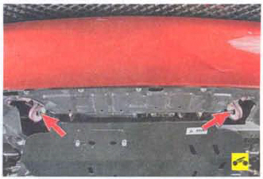
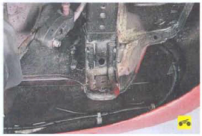

Предупреждение: Двигатели автомобилей, оборудованных каталитическим нейтрализатором отработавших газов, нельзя пускать буксировкой или толканием. Это может привести к перегреву и выходу из строя нейтрализатора. В случае разрядки аккумуляторной батареи не пытайтесь пустить двигатель буксировкой или толканием автомобиля.
Для буксировки автомобиля (или использования его в качестве буксировщика) закрепляйте трос только в специально предназначенных для этой цели местах на передней и задней частях автомобиля.
1. Откройте багажник.
2. Извлеките из багажника коврик.
3. Поднимите крышку люка ниши для запасного колеса.
4. Извлеките из ниши запасное колесо (см. «Замена колеса»).
5. Извлеките увязку с инструментом и буксирной проушиной из ниши для запасного колеса.
6. Достаньте из увязки буксирную проушину, вороток домкрата и ключ для отворачивания гаек колес.
7. Для того чтобы установить буксирную проушину спереди, подденьте заостренным концом воротка домкрата заглушку с правой стороны бампера...
8. ...и снимите заглушку.
9. Вверните буксирную проушину от руки...
10. ...и затяните проушину, используя ключ для гаек колес или вороток домкрата.
11. Для того чтобы установить буксирную проушину сзади, подденьте заостренным концом воротка домкрата заглушку с правой стороны бампера...
12. ...и снимите заглушку.
13. Вверните буксирную проушину от руки и затяните ее, используя ключ для гаек колес или вороток домкрата.
14. Снимите проушину в обратном порядке.
 Для буксировки автомобиля также предусмотрены две стационарные проушины в передней части автомобиля...
 ...и одна стационарная проушина, расположенная в задней части автомобиля справа под бампером. Стационарные буксировочные проушины используются при невозможности применения съемной проушины и при буксировке автомобиля только с помощью эластичного троса, иначе велика вероятность повреждения нижнего края бампера.
Перед буксировкой вашего автомобиля вставьте ключ в замок зажигания и разблокируйте вал рулевого колеса. Включите световую сигнализацию согласно Правилам дорожного движения. Рычаг управления механической коробкой передач установите в нейтральное положение. Если возможно, буксируйте автомобиль с работающим двигателем, чтобы не возрастало усилие на рулевом колесе и педали тормоза.
Предупреждения: Вакуумный усилитель тормозной системы и гидроусилитель рулевого управления действуют только при работающем двигателе. Поэтому учитывайте то обстоятельство, что при буксировке автомобиля с неработающим двигателем резко возрастает усилие на педали тормоза и рулевом колесе. Буксировать автомобиль, оснащенный автоматической коробкой передач или вариатором, с неработающим двигателем можно со скоростью не более 15 км/ч на расстояние не более 10 км. В противном случае коробка передач или вариатор выйдет из строя, так как насос рабочей жидкости не работает и детали агрегата не смазываются. По этой причине автомобиль с автоматической коробкой передач или вариатором следует буксировать эвакуатором с вывешиванием передней оси.